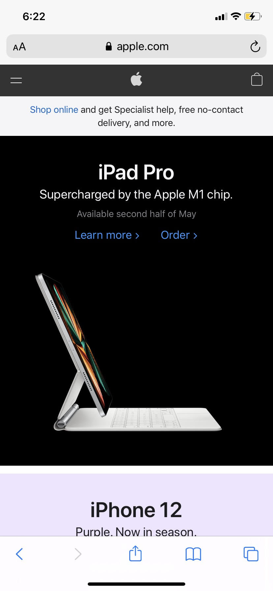

The Rule of Thirds
Example from Google Images
google.com
The rule of thirds is that, if you divide an image into thirds both vertically and horizontally,
the subjects of the image should usually fall on one of those lines. If you imagine those lines,
then (numbered as if by a grid) the content is all on the second and third horizontal line.
PARC: Proximity
This image uses proximity to group related items together. It's immediately obvious what
"Explore gaming systems" and "Popular deals" are referring to, because the relevant
information is right there within the same listing.
White Space and Clean Design
Example from Apple
apple.com

Apple has always been fond of using white space in their advertising. Here, with only a
few text elements and an image of an iPad, there isn't much information to absorb,
and it's all easy to read. This is effective in getting across information before
losing the audience's attention.